图库视图#
按产品模块而非文档类型浏览 Isaac Sim。打开某个模块，即可集中查看其教程、工具参考和开发者参考。
浏览 GUI 的开发者参考、工具参考和教程。
浏览 Importers and Exporters 的教程和工具参考。
浏览 Robot Setup 的教程、工具参考和开发者参考。
浏览 Robot Simulation 的工具参考和开发者参考。
浏览 Robot Motion 的工具参考和教程。
通过 Python、USD、UI 和 OmniGraph 创建并驱动可移植的外部执行器模型。
物理基础、引擎集成、后端、限制以及仿真工具。
浏览 Camera Sensors 的工具参考和教程。
Lidar、雷达、声学、标注器、材质以及高级 RTX 传感器参考。
关节力、接触、力矩、IMU、关节状态、射线投射以及传感器架构参考。
浏览 Development Tools 的开发者参考。
Python 概念、独立环境以及可运行的代码片段。
浏览 OmniGraph 的工具参考和教程。
将 Isaac Sim 桥接到外部进程和协议。
用于搭建新 Isaac Sim 项目的扩展模板和生成器工具。
调试、检查和剖析仿真及扩展。
仓库物流工具、已弃用的 Cortex 教程系列、占用地图以及实时相机流。
图形用户界面#
访问常用的 Isaac Sim GUI 工具及相关的 Omniverse GUI 扩展。
参考起始页、菜单栏、工具栏和主 UI 窗口。
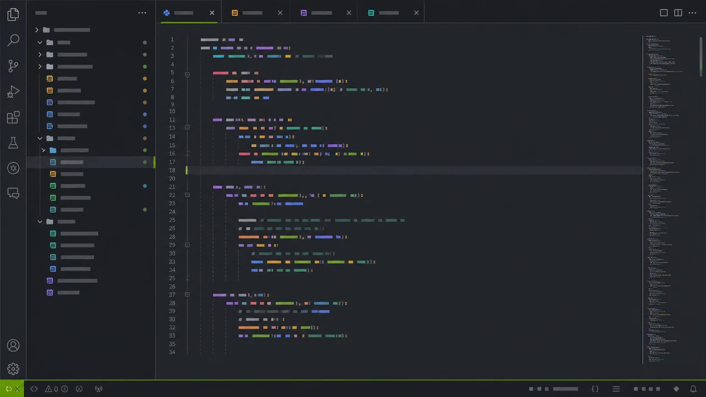
在单个表格中查找视口、舞台和编辑快捷键。
参考用于场景创建和布局的 Create 菜单项。
参考用于生成、可视化和记录合成数据的 Replicator 菜单工具。
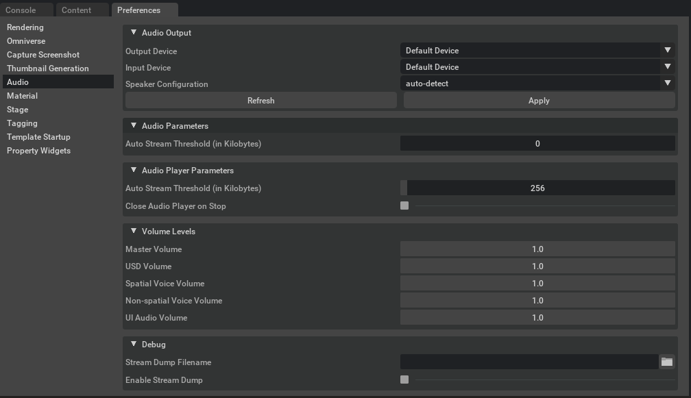
参考在 Preferences 面板中常修改的应用设置。
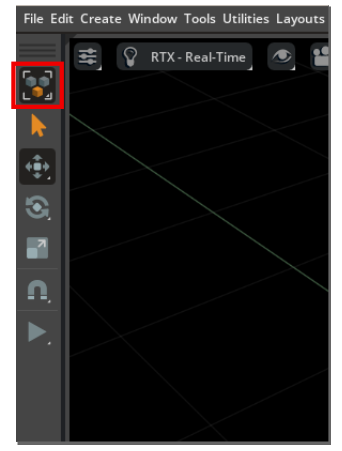
参考类型和模型种类选择模式及其工具栏控件。

使用 Content、Asset 和 Material 浏览器管理资产和场景。
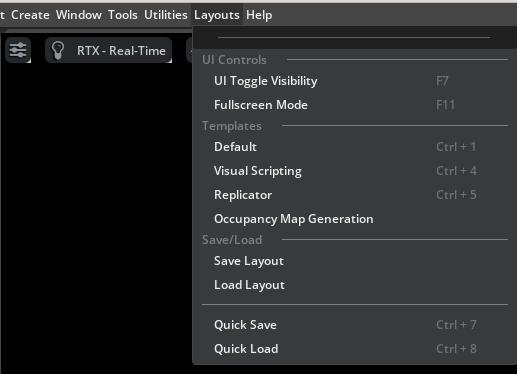
参考预定义的布局模板，并保存或加载自定义 GUI 布局。
从 Isaac Sim UI 保存、加载、引用和收集 USD 阶段。
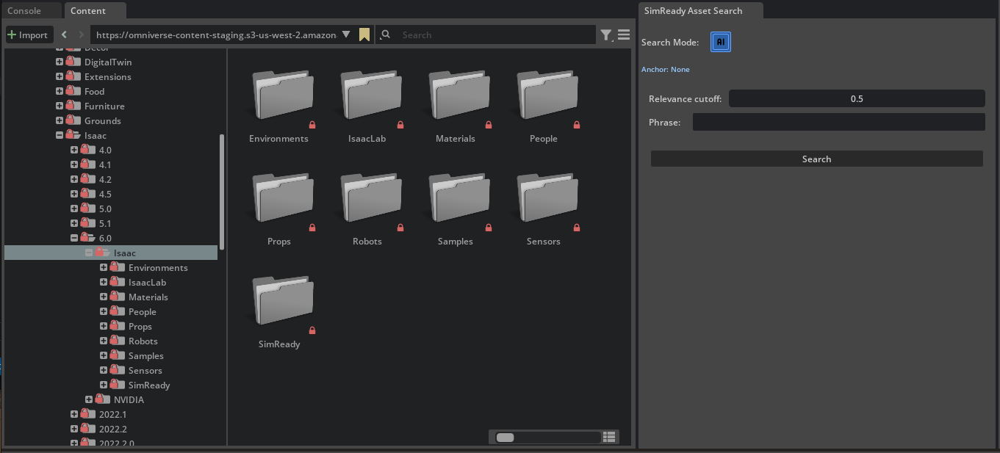
在本地文件夹和 AWS S3 存储桶中搜索 SimReady 资产。

在将仿真就绪资产添加到当前阶段之前，对其进行搜索、检查和配置。
导入器和导出器#
通过 Isaac Sim UI 和扩展 API 导入 URDF 机器人描述。
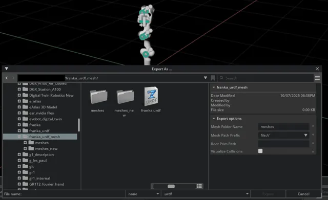
将 USD 阶段或文件导出为 URDF 包。
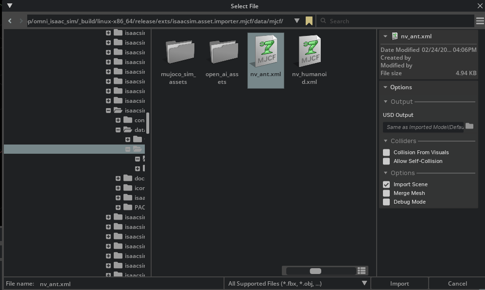
参考 MJCF 导入设置和扩展行为。

将 Onshape 文档导入到 USD。
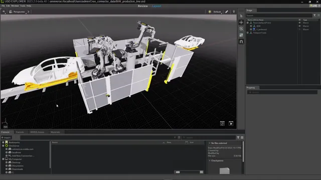
将支持的 CAD 格式转换为 USD。
改为将 ShapeNet 模型作为普通 OBJ 文件导入。
参考 Omniverse 转换器导入到 USD 的资产格式。
通过 UI、Python、独立脚本或 ROS 2 节点将 URDF 转换为 USD。
将机器人 USD 导出为 URDF，并验证其视觉和碰撞网格输出。
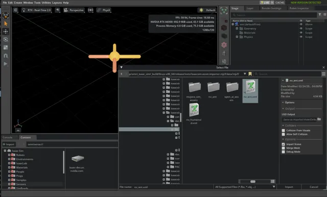
通过 UI、API 或独立 Python 脚本导入 MJCF 模型。
查看已弃用的 ShapeNet 工作流，并在新项目中使用标准 OBJ 导入。
机器人设置#
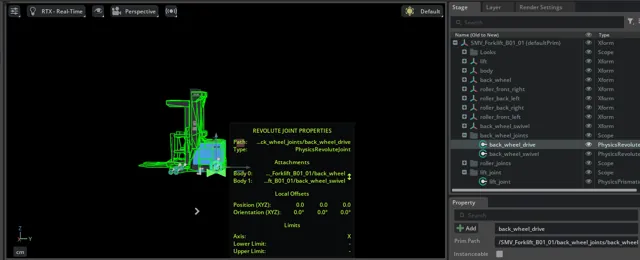
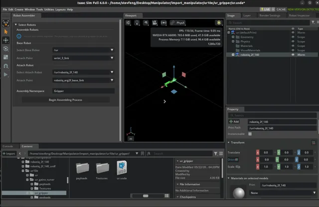
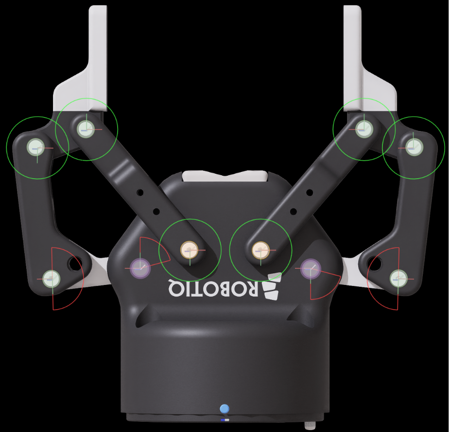
使用关节、模仿关节和测试来装配并验证闭环夹爪结构。
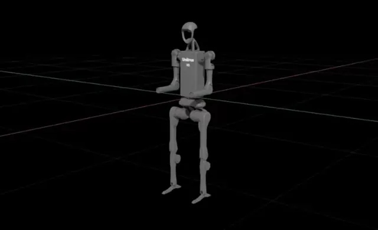
设置 H1 关节默认值，以匹配用于外部控制器（如 ROS）的运动策略。
在 Isaac Sim 中设置灵巧手
导入、检查并调整 Inspire Hand，使其以稳定、临界阻尼的方式运动。
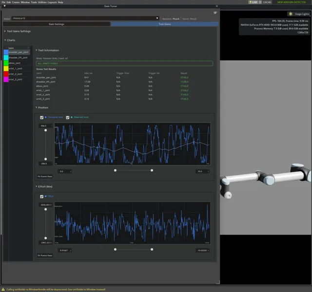
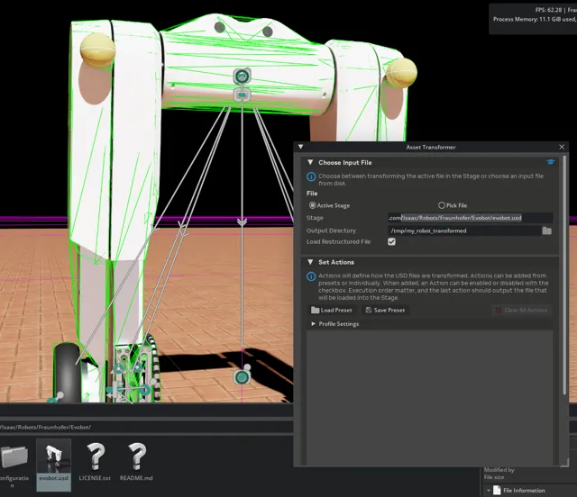
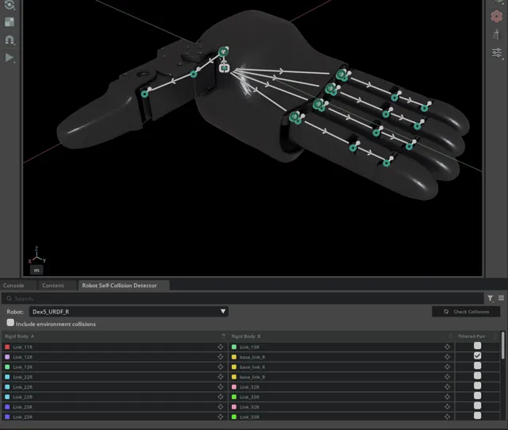
Robot Assembler、Robot Poser、网格合并、增益调整、系统辨识和自碰撞工具。
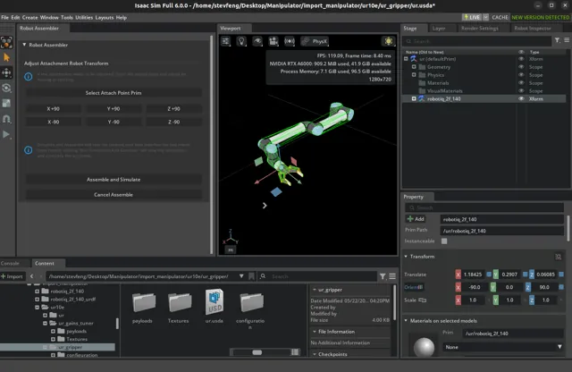
使用 Robot Assembler 工具通过固定关节连接两个机器人或刚体。

参考表面夹爪设置、API 和 OmniGraph 节点。
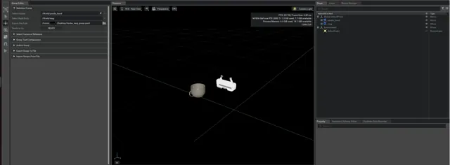
使用 Grasp Editor 编写、模拟、导入和导出抓取文件。
Robot Inspector、Joint Inspector、Physics Inspector 和 Simulation Data Visualizer 参考。
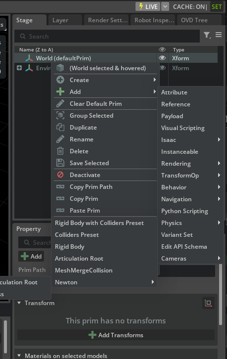
使用正确的 USD 图层、物理属性和执行器公式，为 Newton 导入和编写机器人资产。
排查机器人设置中的重新父级化、绑定、关节和仿真问题。
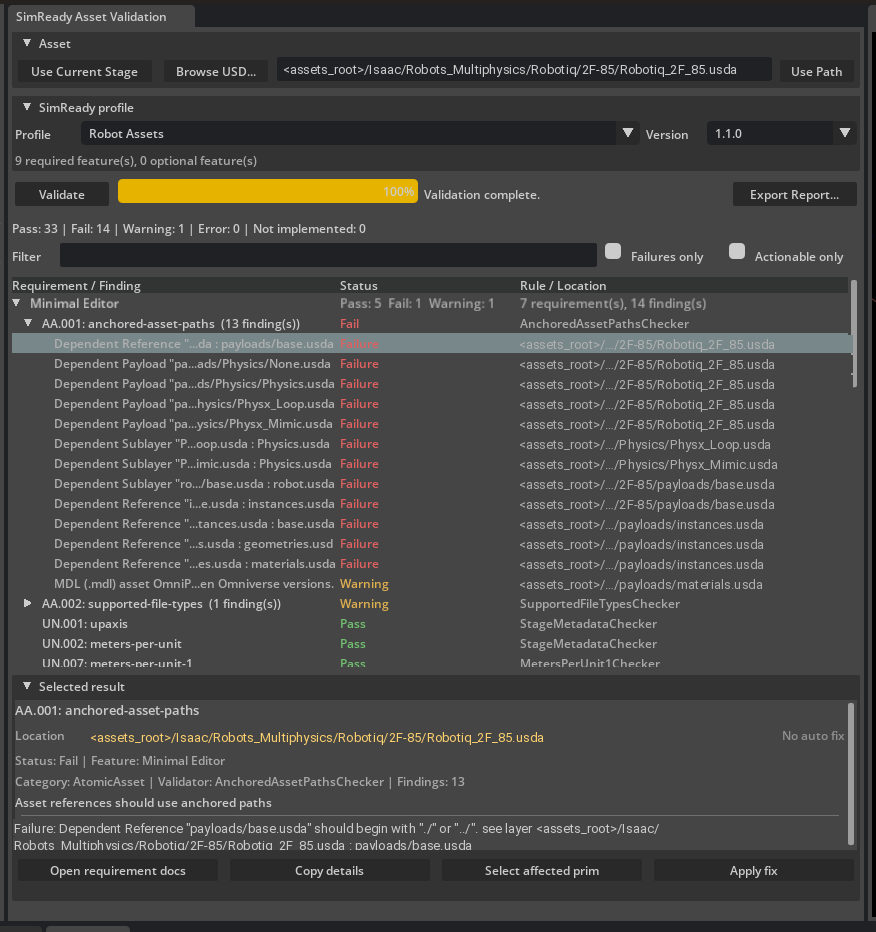
参考用于检查机器人资产质量的验证工作流。
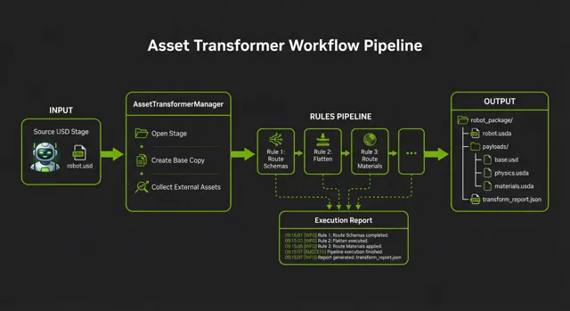
参考 Asset Transformer UI、规则配置文件、报告和动作。
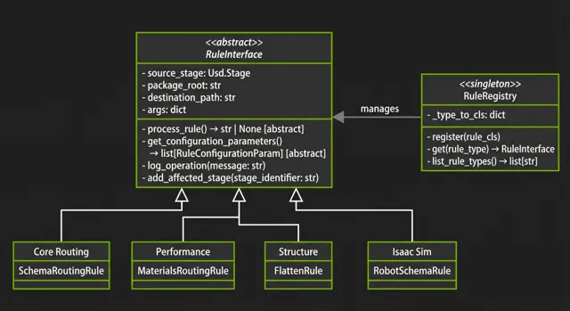
涵盖 Asset Transformer 的编程用法、API 类和自定义规则开发。
按包和函数参考每个内置的 Asset Transformer 规则。
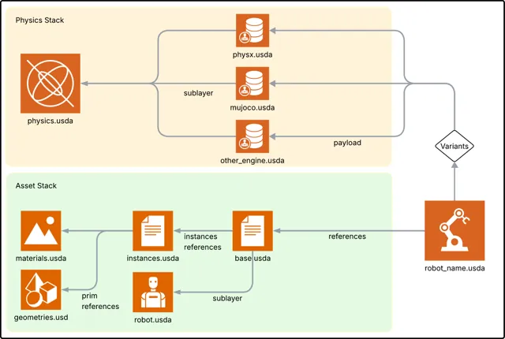
解释模块化机器人资产图层，包括可选的 ROS 集成堆栈。
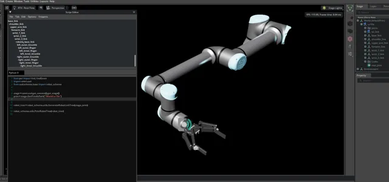
解释 Isaac Sim 机器人 USD 模式和已编写的机器人属性。
机器人仿真#
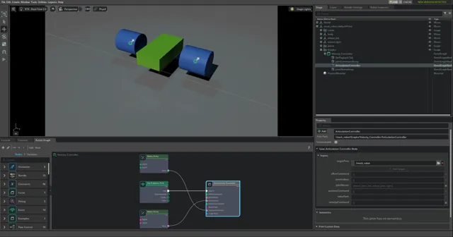
在本节中了解控制器层级结构、机器人类型和仿真指南。
参考关节位置、速度和力矩控制的 Python 和 OmniGraph 接口。
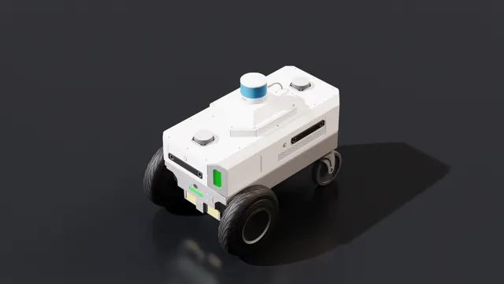
解释差速、轮式底盘和移动机器人控制器的概念。
仿真性能、时间步长、摩擦力、夹爪、碰撞体和质量的实践指南。
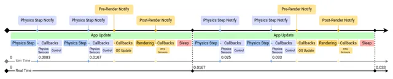
查找贯穿机器人仿真的基础仿真和 Core API 概念。
Newton 执行器#
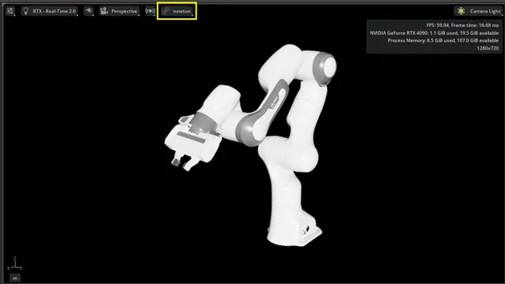
了解 Newton 执行器模型、构建路径和当前限制。
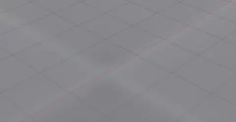
在 Python 中构建 Newton 执行器配置并驱动机器人关节。
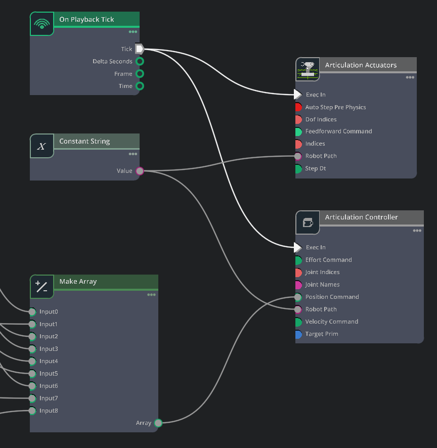
在 USD 中编写可移植的 Newton 执行器 prim，并在运行时发现它们。
在 UI 中创建 Newton 执行器 prim，并配置目标、控制器和力矩限制。
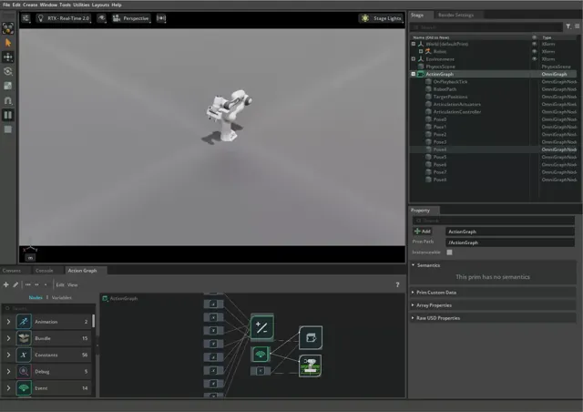
通过 OmniGraph 节点驱动 USD 编写的 Newton 执行器。
查看 Newton 执行器的常见设置、调试和调优注意事项。
机器人运动#
了解统一运动 API、控制器集成和行为编程工作流。
使用现成的控制器让轮式机器人或机械臂运动。
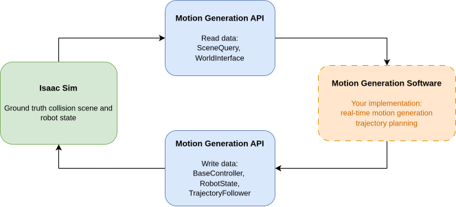
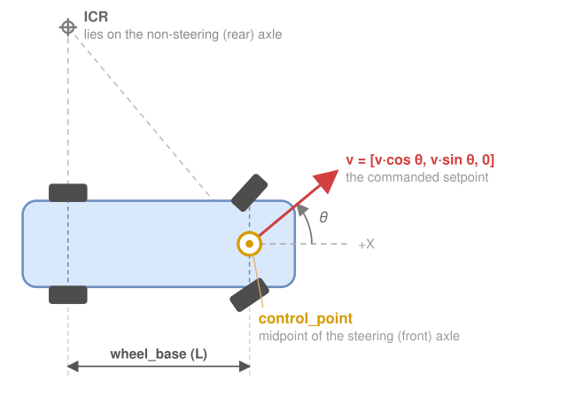

运行交互式及独立的 Franka 抓取放置动作序列。
使用有限状态机、行为树或声明式转换来构建反应式操作任务。
遗留的 Lula 运动生成概念、接口、工具和教程。新开发请使用 Robot Motion。
物理仿真#
了解仿真流水线、支持的物理后端以及引擎集成架构。
了解仿真时序、物理场景、碰撞体、接触和材质。
跟踪物理数据在 USD、Fabric、张量及引擎集成中的流转。
配置 Newton 后端并了解其与 Isaac Sim 的集成。
了解 Newton 水弹性接触模型、碰撞流水线及 SDF 参数。
准备并验证用于 Newton 水弹性接触的螺纹螺母与螺栓装配体。
了解 PhysX 引擎的已知限制及可用的变通方法。

管理仿真状态、步进以及物理场景控制。

从 Physics Inspector 中检查关节结构和关节属性。
在舞台几何体上应用、移除并可视化静态碰撞 API。
可视化运行时变换、速度、加速度、质量和惯性。
检查底层 PhysX 仿真和调试可视化状态。
相机传感器#
了解相机创建、校准、渲染、标注器以及可用的相机模型。
创建并使用单视图立体深度相机传感器。
创建结构光投影仪并获取其渲染的相机数据。
构建具有畸变、输出、tick 率和分辨率变体的可复用 USD 相机传感器。
RTX 传感器#
了解 RTX 传感器仿真、共享设置、数据通道、时序以及迁移指南。
配置并使用 RTX 激光雷达传感器及点云输出。
配置 RTX 雷达传感器、运动 BVH 以及雷达点云输出。
配置声学传感器并使用信号路径输出。
提取点云、扫描缓冲区和原始 RTX 传感器数据。
添加 RTX 传感器使用的非视觉材质属性。
协调独立的传感器渲染速率与仿真时序。
创建并调优自定义 RTX 激光雷达和雷达传感器配置文件。
基于物理的传感器#
了解精确的物理测量、传感器更新速率、插值以及迁移指南。
读取传入和投影的关节结构受力。
创建接触传感器并读取接触力测量值。
读取关节模拟的力矩测量值。
配置 IMU 传感器并读取滤波后的惯性测量值。
读取关节的位置、速度和力矩状态。
定义射线模式并读取精确的物理射线检测命中结果。
参考用于接触、IMU、射线检测及已弃用传感器架构的 USD 属性。
开发工具#
比较 GUI、Extension 和 Standalone Python 开发方法，并了解它们如何结合使用。
直接从 VS Code 在正在运行的 Isaac Sim 实例上执行 Python。
TCP 服务器，可在正在运行的 Isaac Sim 实例内远程执行 Python。
在附加到 Isaac Sim 的 Jupyter 中交互式地编辑和执行 Python。
在内置的 Script Editor 中针对 stage 运行 Python 代码片段。
MCP 服务器，通过语义搜索为 AI 助手提供 Isaac Sim 知识。
版本控制的工作流指南，教导 AI 编码代理执行 Isaac Sim 任务。
涵盖四种修改配置默认行为的 Carb 设置的方法。
添加本地扩展路径或注册表，并更新已安装的扩展。
Python 脚本编写#
介绍 python.sh 的内部机制、独立脚本执行方式以及 Python 开发资源。
使用 Python 代码片段创建刚性图元、视图、物理场景、碰撞、材质和变换。
运行用于异步任务、相机参数和点渲染的实用代码片段。
使用实验性图元 API 封装关节体，并查询或控制机器人的自由度状态。
OmniGraph#
了解 OmniGraph 可视化编程、计算图，以及如何在 Isaac Sim 中使用图编辑器。

Omniverse 中 OmniGraph 编辑器界面的参考文档。
Omniverse 中 OmniGraph 核心概念的参考文档。
查找 Isaac Sim 中常用的 OmniGraph 节点和快捷键。
使用 Python 编写、注册和测试自定义 OmniGraph 节点。
使用 C++ 编写、构建和注册自定义 OmniGraph 节点。
使用自定义 IPC 节点在 Isaac Sim 和外部进程之间流式传输数据。
使用内置的 IPC 节点将数据移入和移出图。
完整的 Omniverse OmniGraph 扩展文档。

Omniverse 中关于构建第一个图的入门介绍。
逐步构建一个控制机器人的 Isaac Sim 动作图。
使用 Python 脚本编写和驱动 OmniGraph 图。
外部接口#
通过 ZeroMQ 将仿真数据流式传输到外部 Python 进程，并发送命令回传。
模板#
为扩展项目选择 CLI、UI 和 VS Code 生成器，或使用捆绑的示例启动独立项目。
使用 repo.sh 模板为 Python、UI、C++ 和 OmniGraph 扩展搭建脚手架。
已弃用的基于 UI 的生成器，使用内置模板搭建 UI 扩展项目。
通过 VS Code 扩展生成高级 Isaac Sim 扩展模板。
调试与分析#
绘制在帧间保持可见的持久性调试线条和点。
在 Commands 窗口中显示每个 UI 操作背后的 Python 命令。
查找已注册的 Kit 命令和操作，并从 Python 中调用它们。
在 VS Code 中调试独立脚本、Docker 脚本以及正在运行的 Isaac Sim 应用。
使用 Tracy 对 Isaac Sim 进行性能分析，并添加 Python 或 C++ 性能分析区域。
其他工具#
运行 cuOpt 仓储物流示例并创建路由网络。
从物理碰撞几何体生成占用地图和高程图。
通过 RTSP 将模拟相机渲染产品流式传输到标准客户端。